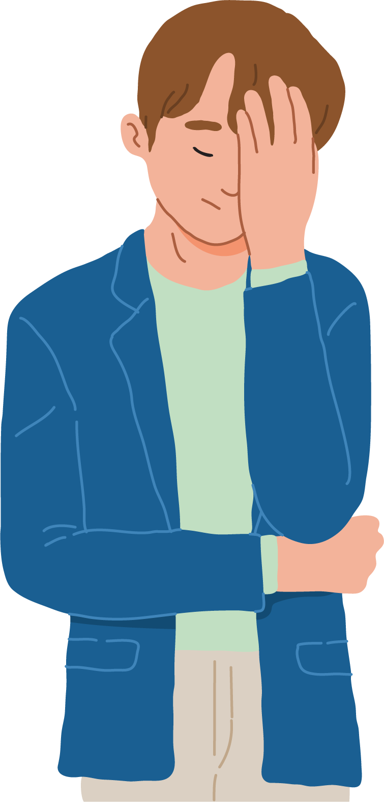

Hvis du vil vide noget om Ventilen som lands-organisation, om ensomhed blandt unge eller bare er i tvivl om, hvem du skal kontakte, så er det Ventilens sekretariat, du skal have fat i. Her sidder alle vores ansatte på et kontor i midten af Køben- havn og venter bare på at høre fra dig.
Vi kan fanges på telefon 70 20 83 08 hverdage kl. 10-16 med meget få undtagelser. Du er også meget velkommen til at skrive til sekretariatet på info@ventilen.dk.
125.000 unge føler sig ensomme. Regionale sundhedsprofiler viser, at 10-12% af de 16-29-årige ofte eller altid føler sig ensomme. Det svarer fx til, at 3 unge i hver klasse føler sig ensomme altid eller næsten altid.
50.000
Forkert
125.000 unge føler sig ensomme. Regionale sundhedsprofiler viser, at 10-12% af de 16-29-årige ofte eller altid føler sig ensomme. Det svarer fx til, at 3 unge i hver klasse føler sig ensomme altid eller næsten altid.
15.000

Forkert
125.000 unge føler sig ensomme. Regionale sundhedsprofiler viser, at 10-12% af de 16-29-årige ofte eller altid føler sig ensomme. Det svarer fx til, at 3 unge i hver klasse føler sig ensomme altid eller næsten altid.
En følelse, der opstår, når et menneske
ikke får opfyldt sit sociale behov
Korrekt
Ensomhed er, når et menneske ikke får opfyldt sit sociale behov. Vi har alle brug for relationer til at opfylde disse, og vores sociale behov varierer også fra person til person. Nogle har kun brug for en eller to gode venner, mens andre har behov for at være en del af en større gruppe.
En følelse, der opstår, når man er bange
Forkert
Ensomhed er, når et menneske ikke får opfyldt sit sociale behov. Vi har alle brug for relationer til at opfylde disse, og vores sociale behov varierer også fra person til person. Nogle har kun brug for en eller to gode venner, mens andre har behov for at være en del af en større gruppe.
En følelse, der opstår, når man keder sig
Forkert
Ensomhed er, når et menneske ikke får opfyldt sit sociale behov. Vi har alle brug for relationer til at opfylde disse, og vores sociale behov varierer også fra person til person. Nogle har kun brug for en eller to gode venner, mens andre har behov for at være en del af en større gruppe.